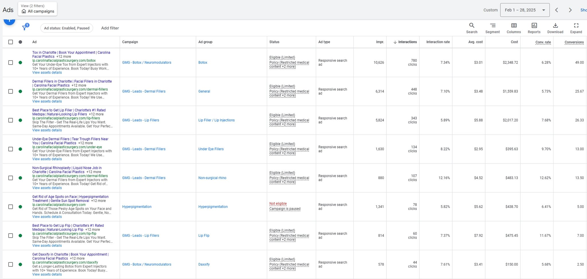

Agency · B2C
How I Rebuilt an Agency's Entire Production Process (By Following the Bottleneck)
Each fix revealed the next problem. Bad SEO process, then bad pages, then bad design, then inefficient production. I fixed them one by one and changed how the agency worked.
The Situation
I was hired as a Digital Marketing Manager at a fully staffed digital marketing agency. Within my first month, I realized the SEO process had a structural problem.
Clients and account managers picked blog and page topics based on gut feeling. Those topics went to freelance copywriters. The finished content then came to SEOs with a request to "research some keywords and put them in the headers and alt text." Then it got posted.
I proposed a new system to my manager. We ran a limited test first to make sure it didn't strain existing infrastructure. The process itself was straightforward:
The results weren't subtle. Every client that ran through the new system saw significant traffic growth. Every client that didn't, didn't. The agency eventually rolled the process out to all accounts.
More traffic was great, but it didn't translate proportionally into more leads. That forced me to look at what was happening after the click.
The answer was on the pages themselves. The agency's websites were built like informational wikis, even when the pages were supposed to sell services. A Botox page would open with "What is Botox?" Think about that for a second: someone just typed "Botox" into Google. They know what Botox is. They're looking for a provider, not a definition.
I was running PPC landing pages on Unbounce separately from the main website, so I used those as a testing ground. Once I had the data proving the approach worked, I could make the case for changing how everyone else worked too.
PPC campaign performance showing conversion rates across ad groups (click to zoom):

I established a weekly training session I called "Grill Websites." The formal term would be heuristic teardown, but that's less fun. Every week, I'd gather the copywriters for an hour. We'd pull up real websites (sometimes our own, sometimes terrible ones I found in the wild) and talk through user intent, customer journey, persuasive principles, and what was actually happening when a page failed to convert.
The goal wasn't to hand them templates. It was to teach them how to think about the person on the other side of the screen. Why are they on this page? What did they just type into Google? What do they need to hear next?
The last piece was design. The agency's designers were designing for aesthetics, not conversions. The visual work looked good but it wasn't structured to support the persuasive copy framework that was now producing results.
I pushed for a new protocol: copy comes first, design supports it after. This was a fight, but the conversion data made the argument for me.
Once that was established, we took it further. Since persuasive page elements tend to come in predictable forms (hero sections, benefit blocks, social proof, CTAs), we moved to a modular design and development system. Instead of custom-building every page from scratch, we had reusable components that could be assembled and customized per client.